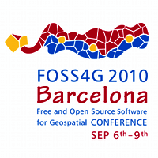

OSGeo Live
GeoSpatial Free and Open Source Software
FOSS4G · Nottingham · September 2013
Angelos Tzotsos · tzotsos@opensuse.org ·
@tzotsos
OSGeoLive Build Manager · OSGeo Charter Member
Based on official OSGeoLive presentation by Cameron Shorter
Layout created by Jorge Sanz

GNU/Linux distribution containing more than 50 geospatial applications


Open Source Geospatial Foundation (OSGeo)
Since 2006 A Non Profit Umbrella for:
- GeoSpatial Free and Open Source Software
- Education

- Open Data
OGC Standards
- Interoperability
- Future Proof
- Return of Investment
Databases
- PostGIS
- SpatiaLite
- pgRouting
- Rasdaman


Web Services


Web Mapping


Desktop Applications


Spatial Tools


Navigation & Maps


Map Data


Geospatial Libraries


Want to know more?
http://live.osgeo.orgOSGeo Foundation
http://osgeo.orgConferences 
http://foss4g.orgLicense

¡Thank you!
¿Questions?